Code 7 -- Trills, Ottava, Pedals -- parameter structure |
P1 code number (1)
P2 staff number
P3 horizontal position
P4 vertical position
P5 size of symbol, piano pedal symbols
P6 right position of extension line
P7 type of symbol
P8, 9 various features
trills
P11, 12 brackets, arrows
P15, 16, 18 offsets
P25
P26
Jump to Letter Commands
Jump to Function Key Setup
P5 is the size factor for Trills, Ottavas, and Graphic Harp Symbols. The default size 0 is the same as 1. When creating Piano Pedal Lines, P5 must equal 0.
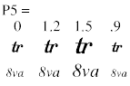
Graphic Piano Pedal Symbol. (P7 = 20)
For SCORE's unique graphic piano pedal symbols, P5 is a three-digit number XYZ where each digit indicates which pedal is depressed. P9 can change the size factor with these symbols.
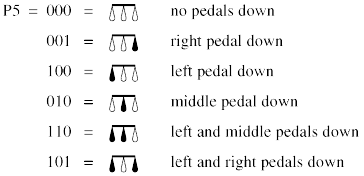
Any combination of digits XYZ are possible. A "1" in any of the digits creates a filled pedal symbol which indicates which pedal to depress. A "0" creates an open shape indicating the pedal is not depressed.
Toolbar buttons
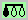 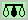 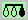 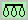
P6 and P8 are used to extend lines to the right and left of the symbol. P11 and P12 can add brackets and arrows to the line ends.
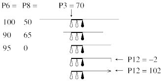
Toolbar buttons
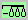 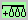 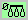
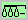 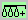 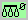
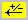 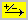
= add bracket up on left line 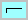
= diminish vertical line 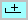
= add bracket up on right line 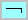
= diminish vertical line 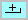
P6 right position of extension line. 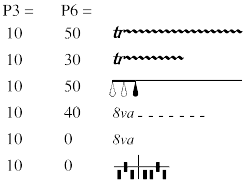
P7 type of symbol. 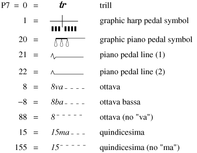
P8, P9 various features depending on P7 value..
Trills. (P7 = 0)
If P7 = 0, P8 indicates the type of accidental (if any) that will appear above the trill. Note: if you prefer to create ancillary notes to indicate what pitch is trilled to, see Code 9. See
7p6>P6 regarding extension line.
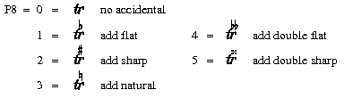
P9 indicates the size of the "wave" in the extension line.
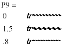
Toolbar buttons
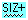 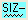 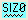
P11 indicates the vertical position of the extension line.
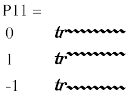
Toolbar buttons
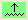 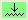 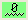
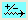
Ottava.
(P1 = 7, P7 = 8, 88, -8, -88, 15, 155)
P8 indicates the width of the dash in the extension line. P12 will add a vertical line on the last dash.
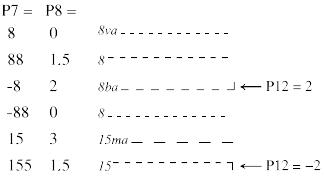
P9 indicates the size of the space between the dashes.
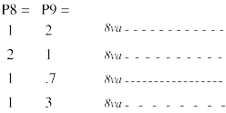
Graphic Harp Pedal Symbol. (P7 = 1)
For this symbol, P8 is a three-digit number XYZ indicating the positions of each pedal on the left side.
P9 is a four-digit number ABCD that indicates the pedal positions for the right side.
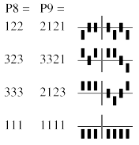
Each symbol represents one of the seven pedals on the harp. From the left, they indicate the pitches: D C B
| E F G A. The "digits" in P8 and P9 represent the position of the pedals, as shown above. These represent: 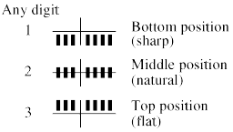
If you are unfamiliar with the use of this notation for harp pedaling, we suggest you consult a reference source such as any modern text on orchestration.
Piano Pedal Line. (P7 = 21, 22)
For this symbol, P8 indicates the position of the "notch" signifying the point to lift and reset the pedal. (P9 should remain at 0.)
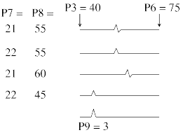
P11, P12 brackets, arrows.
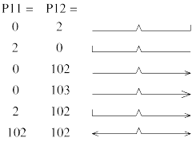
P11 indicates a bracket line on the left end of a piano pedal line. P12 indicates a bracket line on the right end. (Please note that P11 and P12 may also be used with the graphic piano pedal symbol, P7 = 20. P12 may be used with the the various ottava symbols.)
The value in P11 or P12 alters the size of the vertical line. Negative values make the line point downward. Adding 100 to either of these parameters will create an arrowhead.
P15, P16, P18 offsets
P15 may be used to offset the left side of all Code 7 items. This is useful to lock an item to the position of a note so there is no change if the music is respaced. The right end extensions of trills, ottavas and graphic piano pedal symbols may be offset from the given P6 by setting P16 to 1 and P18 to the offset value.
P25 layer number.
See Color Control.
P26 color/gray value.
See Color Control.
___________________________________________________________________________
----- Shortcut Letter Commands while editing --------------------------
TRI = trill.
TRILLF = trill with added flat.
TRILLS = trill with added sharp.
TRILLN = trill with added natural.
OVA = ottava. (P7 = 8)
OVAU = ottava, dashes up. (P7 = 88)
OVAD = ottava, dashes down. (P7 = -88)
OMA = quindicesima. (P7 = 15)
OMAU = quindicesima, dashes up. (P7 = 155)
OBA = ottava bassa. (P7 = -8)
PEDA = graphic piano pedal symbol. (P7 = 20)
PEDB = piano pedal line. (P7 = 21)
PEDC = piano pedal line. (P7 = 22)
HARP = graphic harp pedal symbol. (P7 = 1)
SZP = overall size plus .1 (P5 + .1).
SZM = overall size minus .1 (P5 - .1).
SZ x = overall size = x (P5 = x).
(PEDA,B,C use P9 for size.)
LOFF x = left offset x steps. (P15 = x)
LOFFM
= left offset minus .5. (P15 - .5)
LOFFP = left offset plus .5. (P15 + .5)
ROFF x = right offset x steps. (P16 = 1, P18 = x)
ROFFM = right offset minus .5. (P16 = 1, P18 - .5)
ROFFP = right offset plus .5. (P16 = 1, P18 + .5)
XOFF = zero
offsets
>>> While editing TRILLS
TRF = add flat.
TRS = add sharp.
TRN = add natural.
TR0 = remove accidental.
WY = yes, add wiggle (P6).
WN = no wiggle (P6 = 0).
WU = wiggle up (P11 + .2).
WD = wiggle down (P11 - .2).
WZ = wiggle position normal (P11 = 0).
WSP = wiggle size plus (P9 + .1).
WSM = wiggle size minus (P9 - .1).
WSN = wiggle size normal (P9 = 0).
| F1 Help |
F2 Back to Previous Item |
F3 Forward to Next Item |
F4 Back to Previous Item, Same Code # |
F5 Forward to Next Item, Same Code # |
F6 . . . |
| F7 Flip |
F8 Center |
F9 Exit from Edit Mode ( X ) |
F10 . . . |
F11 Delete, Move to Previous, Same Code # |
F12 Delete, Move to Next, Same Code # |